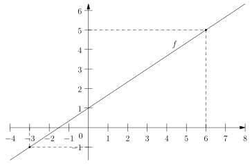

Contrôle sur les fonctions affines – 7 Mars 2023.
noté sur 20 points
Exercice 1 – \(6\) points
Soit \(f\) une fonction affine représenté sur le graphique ci-contre. On définit comme dans le cours les valeurs de \(a\) et \(b\) telles que : \[ f(x) = a x + b \]

- (1) Rappelez le nom des valeurs \(a\) et \(b\).
- (1) D'après le graphique, quelle est la valeur de \(b\) ?
- (1) Par lecture graphique, quel est le sens de variation de la fonction \(f\) sur \(\mathbb{R}\) ?
- (1) D'après la question précédente, que peut-on en déduire sur la valeur \(a\) ?
- (1) Par lecture graphique, quel est la valeur de \(x\) telle que \(f(x) = 0\) ?
- (1) Quelle est la valeur de \(a\) ? Vous présenterez vos calculs avec soin, en utilisant correctement les notations \(\Delta x\) et \(\Delta y\), et vous utiliserez les points marqués sur le graphique.
Exercice 2 – \(3\) points
On définit la fonction affine \(g\) par l'expression : \[ g(x) = 2 - 3x \]
- (0.5) Quelle est la valeur de \(a\) ?
- (0.5) Quel est le sens de variation de la fonction \(g\) sur \(\mathbb{R}\) ?
- (2) Donner le tableau de variation de la fonction \(g\) sur \(\mathbb{R}\).
Exercice 3 – \(3\) points
On définit la fonction affine \(h\) par l'expression : \[ h(x) = -3(x + 1) \]
- (0.5) Donnez l'expression développée de \(h\).
- (0.5) Montrez que l'équation \(h(x)=0\) admet comme unique solution \(x = -1\), avec l'expression précédemment obtenue.
- (2) Donner le tableau de signe de \(h\) sur \(\mathbb{R}\), en justifiant.
Exercice 4 – \(4\) points
On considère \(i\) la fonction définie par : \[ i(x) = - 8 x^{2} + 14 x - 3 \] Attention, \(i\) n'est pas une fonction affine !
- (1) Montrer, en développant, que \(i\) admet aussi comme expression \[i(x) = (-2x + 3)(4x - 1)\]
On pose \(i_{1}(x) = -2x + 3\) et \(i_2(x) = 4x - 1\)
- (1) Résolvez les équations \(i_{1}(x) = 0\) et \(i_{2}(x) = 0\).
- (2) Donner le tableau de signe de \(i\) sur \(\mathbb{R}\). Vous donnerez toutes les lignes qui vous ont permises de trouver le signe de \(i\) sur \(\mathbb{R}\).
Exercice 5 – \(4\) points
Deux fournisseurs d'accès à internet propose un forfait.
Premier forfait, de l'entreprise F : \(50\) euros de frais de dossier, puis \(30\) euros par mois.
Deuxième forfait de l'entreprise G : \(35\) euros de frais de dossier, puis \(32\) euros par mois.
Les frais de dossier sont payés lors de la mise en service au début du forfait. Ils ne sont donc payés qu'une seule fois.
- (1) Montrer que si on appelle \(f\) et \(g\) les expressions qui associent le coût du forfait internet de l'entreprise F et G au bout de \(x\) mois, alors on a : \[ f(x) = 30x + 50 \qquad \text{et} \qquad g(x) = 32 x + 35 \] Vous pouvez donner un raisonnement uniquement pour un seul forfait.
- (0.5) Calculez \(f(1)\). À quoi correspond ce résultat ?
- (0.5) Résolvez l'équation \(f(x) = 1000\). À quoi correspond ce résultat ?
- (1) Résolvez l'équation \(f(x) = g(x)\) ? À quoi correspond ce résultat ?
- (1) Julie a besoin d'un forfait internet pendant \(7\) mois. Vers quelle entreprise devrait-elle se tourner pour payer le moins cher possible ? Vous pouvez justifiez à l'aide de la question précédente, ou indépendamment de la question précédente.
Exercice 6 – \(2\) points BONUS
Charlie confie le cryptogramme de sa carte bancaire1 (qui est un code à trois chiffres qui figure au dos de sa carte) à ses amis Alice et Bob. Il souhaite être sûr qu'Alice et Bob puissent retrouver ensemble son cryptogramme, mais il veut s'assurer qu'aucun des deux séparés ne peuvent le retrouver.
Charlie confie à Alice une clé, qui vaut \(A = 100\) et qu'elle doit garde secrète. Charlie fait de même avec Bob fait de même et sa clé vaut \(B = 94\).
Le cryptogramme de Charlie correspond à l'ordonnée à l'origine de la fonction affine \(f\) telle que : \[ f(1) = A \qquad \text{ et } \qquad f(3) = B \]
- (1) Pourquoi Alice, sans l'aide de Bob ou vice versa, ne peut pas retrouver le cryptogramme de Charlie ?
- (1) À l'aide des nombres \(A\) et \(B\), retrouvez le cryptogramme de la carte bleu de Charlie. Vous donnerez le détail de votre raisonnement. Toute trace de recherche sera valorisée.
- (Bonus du bonus), proposez une méthode pour partager un code de la même manière que Charlie mais avec trois2 personnes, disons Alice, Bob et Damien.